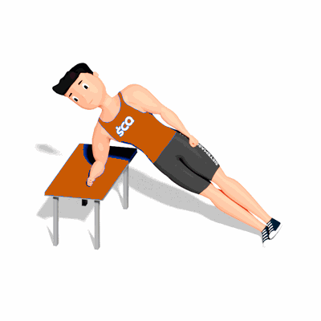

Prancha Lateral no Banco

O exercício tem como objetivo trabalhar melhor os músculos oblíquos, que ficam localizados na parte lateral da barriga. Como também auxilia no aumento da estabilidade da lombar.
Ficha Técnica
Tipo: Funcional
Grupo Muscular: Abdome
Aparelho: Nenhum
Músculos: Nenhum
Como realizar
- De lado a um banco, apoie o antebraço direito sobre o banco. O cotovelo do seu braço direito deve estar diretamente abaixo do seu ombro;
- Pernas estendidas e empilhadas do quadril aos pés, cabeça e coluna alinhadas;
- Realize a contração dos músculos abdominais;
- Em seguida, levante os quadris e joelhos do solo enquanto expira. Mantenha a posição;
- Logo após as respirações, inspire e retorne à posição inicial;
- Mude de lado e repita.
 RC STORE
RC STORE